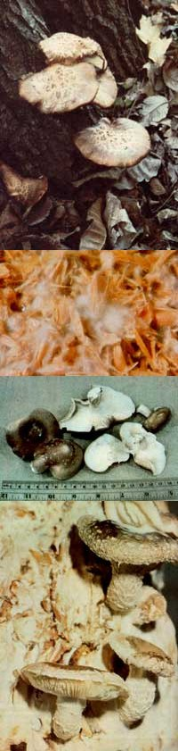
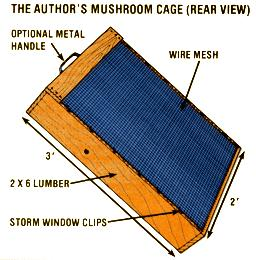

Here's the lowdown on an exotic Oriental one-legged edible!
In ancient China and Japan, the savory shiitake (it's pronounced "she-tar-kee") mushroom was reserved for royalty, and its deep forest habitats-where the fungi grew wild on the logs of shii trees and other hardwoods-were closely guarded. Then, some thousand years ago, Japanese farmers began to cultivate the firm, slightly chewy morsels, and today the island nation exports more than three million pounds of dried mushrooms a year . . . to countries all over the world.
These gourmet treats (which are much more flavorful than the commonly available white button mushrooms) are an excellent source of high-quality protein, fiber, vitamin C, the B vitamins, calcium, phosphorus, iron, and trace elements . . . and contain even fewer calories than do apples. Furthermore, clinical tests have demonstrated the shiitake's ability to reduce serum cholesterol in humans by 10-20%, and-when fed to laboratory animals-the fungi have seemed to help prevent polio and influenza infections.
FOOD FOR ALL
B esides being a dinnertime treat and a marketable crop (the food co-ops here in Madison, Wisconsin are eager to buy all I can produce, at about $2.00 a pound), the shiitake (Lentinus edodes) can provide food for your animals. No, the critters don't eat the mushrooms (which are far too tasty to be used as livestock feed) . . . but they'll love the straw, bark, and paper compost that remains after the harvest. These fungi, you see, are lignicolous: that is, they break down the lignin that makes such wastes unsuitable for animal rations, and-at the same time-release vitamins, carbohydrates, cellulose, and sugars . . . as well as a slightly sweet aroma. (In palatability tests, cows and pigs chose mushroom compost over conventional feeds every time!)
Though the mushrooms should ideally be eaten within two days after they're picked, they do keep longer than the common white variety and are easily dried whole .. . in a 140°F oven or-better yet-outdoors on a hot day. To reconstitute them, simply soak the fungi for 20 to 30 minutes in cool water . . . or for 15 minutes in hot water. They won't swell up very much, but will become quite pliable.
SHIITAKE CULTIVATION
The best "culture" on which to grow the shiitake contains straw, corncobs, 10% oak bark (an important ingredient), and up to 50% paper. Oat hulls, sawdust, and other similar farm wastes can also be employed, but-whatever you use-be sure to grind the material up well.
Of course, you'll also need mushroom seed (or spawn, as it's properly called). :This can be obtained from The Kinoko Company (Dept. TMEN, 8139 Capwell Drive, Oakland, California 94621) at $9.95, postpaid, for 500 grams. (Write ,and ask for a catalog.) Use about one ounce (28 grams) of spawn per pound of dry waste. If you purchase already seeded wood chips, simply allow five to ten chips for each standard compost container, described below. (Or experiment by ordering a ready-to-sprout "Shiitake Mushroom Log" for $21.95 postpaid from The Lovin' Spoonful, Dept. TMEN, 28 Durham Drive, Dix Hills, New York 11746.)
To construct your "tray", make a frame from softwood 1 X 6's (mine is 2' X 3'), being sure to use waterproof glue. Staple a screen of wire mesh (with 1" to 2" holes) to one side of the frame, and then affix 12 storm window clips to hold another (removable) piece of wire screen to the back. For convenience, a metal handle can be fastened to the top (one of the shorter sides).
Now, pack the tray well with the compost mixture and pour boiling water-about a gallon for every pound of dry material-over the waste. (This should be done in an old tub so that the straw can soak up the water.)
An alternative method is to heat a large drum of water to boiling and "dunk" the entire loaded tray. (This technique is preferable when more than one container is being "pasteurized".) After several minutes remove the tray from the water, allow it to drain, and cover it with a clean polyethylene bag (plastic trash bags work fine).
PLANT YOUR CROP
The mixture should then be allowed to cool to 85°F, a process which can take from one to three days. At that point, uncover the tray . . . remove the wire backing . . . and-with clean hands-mix in the spawn. (If seed-inoculated wood chips are used, simply push them into the mixture without removing the screen.) Recover the container with the plastic bag, seal the wrap well, and allow the cage to sit in a dark place.
After about one week, the shiitake must be exposed to light for five days. (Sunlight or fluorescent light is fine, but grow-lights won't work at all.) Unless clear plastic bags are used, you'll have to uncover the container . . . and administer a daily misting to make sure the compost is kept moist.
When the exposure time is up, return the tray to the plastic bag-and to its dark confines-for six to seven more weeks . . . which is the amount of time necessary for the mushroom seed to spread throughout the compost. This "spawn run" will be finished once a white growth (called mycelium) covers the outer surfaces of the culture.
At that point, uncover the container . . . turn on the lights . . . and wait for the fruiting bodies (the part of the mushroom you eat) to appear. In a week to ten days, tiny pins will form and will soon develop into mature edibles. The tray (or trays) must be kept moist during this time (a hose with a mist nozzle does a nice job), but don't overwater them. (It's also important that the area be well vent ilated ... otherwise the mushrooms may produce long, tough stems.)
As the one-legged edibles reach the desired stage (they'll vary in size from half an inch to two inches across the caps), cut each of them off at the base with a sharp knife. After that harvest, a second crop should appear in two weeks if the tray is kept moist. In fact, you can usually obtain three or four crops from a single container!
Once production ceases, remove the mushroom compost and give your livestock a gastronomical feast. Then, before using the container again, clean it well with hot water and a scrub brush.
ANOTHER GROWING METHOD
If you don't have critters to feed or a garden that needs compost-and if you're willing to wait a year or two for your first shiitake crop-I've found an easier growing method . . . one that doesn't require the use of straw cultures or cages.
First, in the fall, obtain a cord of oak logs. Then, in the following spring, drill holes in the wood and pound about 750 spawned wood chips (per cord) into the holes. Stack the logs in a pile, and-after about a year-the first mushrooms will appear. This crop won't be very big, but by the second year the logs will be covered with delectable fungi.
Woodpile crops can be harvested in both spring and fall, and-if the logs are kept cool and moist-you can sometimes get a good crop through the summer, too. Your oak stack will continue to produce for four to five years, yielding a total of about 1,000 pounds of mushrooms. (You needn't worry about the effects of exposure to light, ventilation, or cold winter weather, either . . . because the shiitake is pretty hardy.)
SPAWN YOUR SPAWN
To save money, you can grow your own spawn, for future use, from the seed you buy. Just mix oak chips with water, and process them in a pressure cooker at 15 pounds for 25 minutes. Allow the cooker to cool . . . open it . . . drain off the excess water . . . and pour the chips into a new, clean plastic bag. Add a bit of spawn (or a few spawned wood chips) and seal up the sack. After a couple of months, the chips will be covered with seed and ready to use. (Always remember to reserve a couple of chips from each batch to produce more.)
You'll find these mushrooms a delight to eat, since-besides seasoning the dish in which they're used-they retain their own unique taste. (Include them sparingly at first, because the shiitake's flavor is much stronger than that of its supermarket counterpart.)
"Mushrooms are the fastest-growing agribusiness in this country," says fungus expert Gary Leatham, "but-as people find out how good such exotics as shiitake are-many shoppers will give up the white button mushroom. When that happens, the small-scale farmer will reap the benefits."
|
 In Japan, the shiitake mushrooms - formerly reserved for royalty - are now grown in large quantities on harwood logs, considered an integral part of that country's forest industry, and exported worldwide by the millions... When your mushroom compost is covered with a ""spawn run"" of white mycelium, as in this close-up, it's ready to be exposed to light... The ruler will give you some idea of the size of these strong-flavored mushrooms when they're ready for eating... These clumps of mature fungi growing on mycelium-coated compost will be harvested to make room for a new crop. |
 |
|